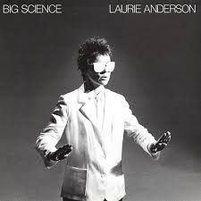

Tecnología, narrativa y experimentación
El trabajo de Laurie Anderson se caracteriza por la integración de tecnologías en sus procesos creativos, no como un fin en sí mismo, sino como una herramienta para expandir el lenguaje artístico. Utiliza dispositivos electrónicos, procesamiento de voz y medios audiovisuales para construir experiencias que combinan relato y experimentación.
Sus obras suelen desarrollarse como narraciones fragmentadas, donde la voz guía al espectador a través de historias que mezclan lo personal, lo político y lo ficticio. Este enfoque permite explorar nuevas formas de contar, donde la estructura no es lineal y la interpretación queda abierta.

Obras y conceptos clave
O Superman
O Superman es una canción de 1981 y parte de la obra mayor United States, «O Superman», una pieza casi minimalista medio-cantada, medio-hablada, alcanzó la segunda posición en la UK Singles Chart en 1981 Anderson era poco conocida fuera del mundo del arte. Primero publicada como un sencillo, la canción también apareció en su álbum debut Big Science.
La canción encabezó la encuesta de sencillos Pazz & Jop de Village Choice en 1981.
Big Science

Big Science es el álbum de estudio debut de la artista y música estadounidense Laurie Anderson. Fue el primero de un contrato de siete álbumes que Anderson firmó con Warner Bros. Records. El álbum consta de una selección de los mejores momentos musicales de su producción de ocho horas, United States Live, que a su vez se lanzó como una caja de 5 LP y un libro en 1984.
Lenguaje y narrativa
El lenguaje como materia artística
El lenguaje ocupa un lugar central en la obra de Laurie Anderson. Sus piezas exploran cómo las palabras construyen significado y cómo pueden ser transformadas mediante la repetición, la fragmentación y el uso de tecnología.
A través de estas estrategias, el lenguaje deja de ser únicamente un medio de comunicación para convertirse en un material artístico. Sus obras revelan las tensiones entre lo que se dice, lo que se escucha y lo que se interpreta.

Performance multimedia
La performance como experiencia
La performance es uno de los principales formatos en los que desarrolla su trabajo. En sus presentaciones, combina música, proyecciones visuales y narración en vivo para crear experiencias inmersivas.

Manipulación de la voz
Cruces entre arte y tecnología
Laurie Anderson ha sido una pionera en la incorporación de nuevas tecnologías en el arte. Desde instrumentos modificados hasta sistemas digitales, su trabajo investiga cómo la tecnología puede influir en la creación y la percepción artística.
Este cruce ha permitido ampliar las posibilidades del arte contemporáneo, integrando herramientas que transforman tanto los procesos como los resultados. Su obra continúa siendo relevante en un contexto donde la tecnología ocupa un lugar central en la cultura.